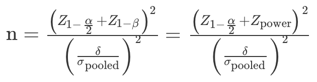
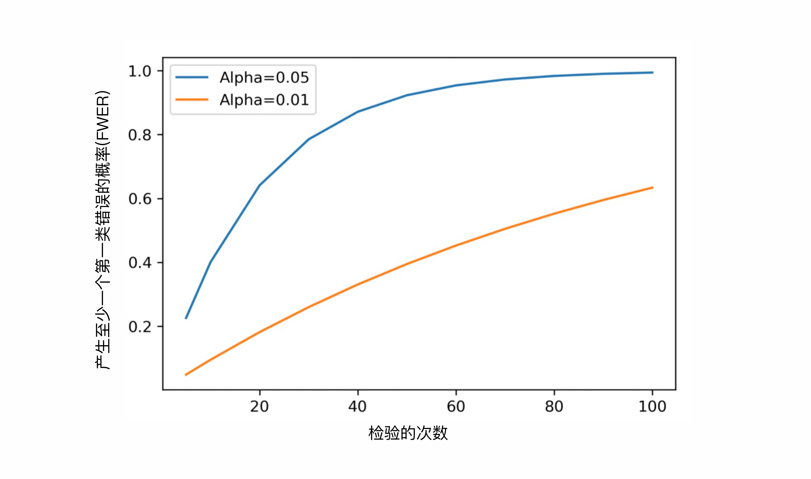
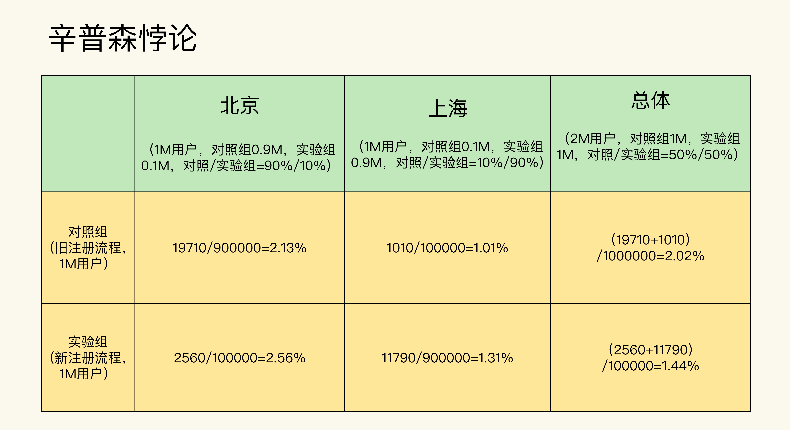
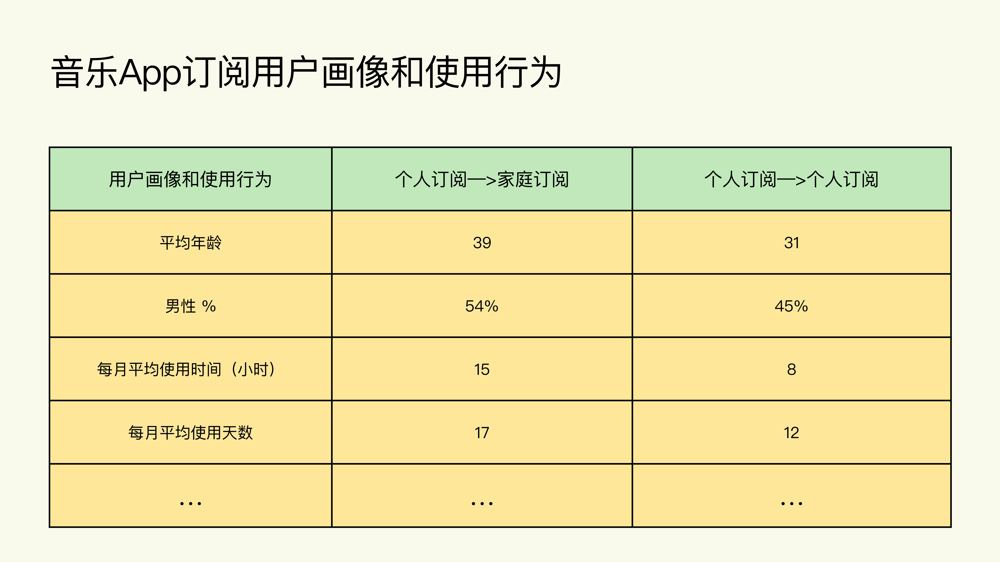
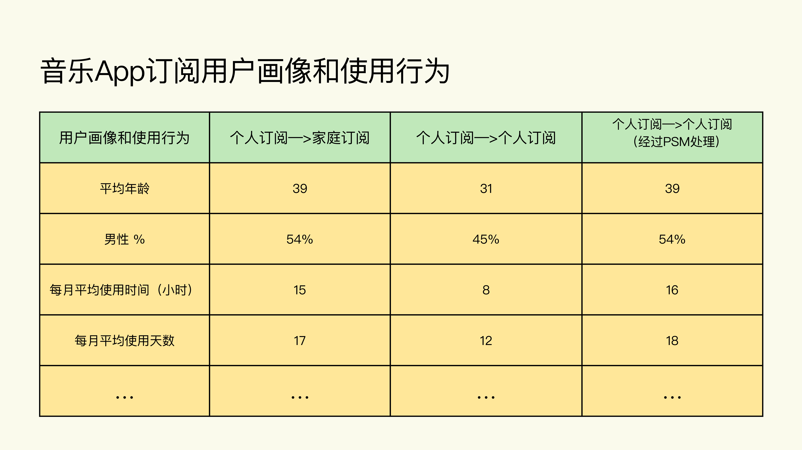

测试结果不显著，要怎么改善
测试结果不显著可能有方面的原因：
- A/B 测试确实没有效果，所以两组的指标是相同的。
- A/B 测试有效果，但由于变化程度很小（数据集导致，我们不可控），测试的灵敏度（Power）不足（我们可控），所以并没有检测到两组指标的不同。
对于第一种原因，我们考虑放弃测试的实验组即可。下面我们着重讲解第二种原因，从 A/B 测试的角度进行一些优化和调整。具体来说就是，通过提高 Power 来提高 A/B 测试的检测灵敏度。
有什么方法可以提高 Power 呢？
由于样本量的估算公式如下

其中，Z1−2α 为 (1−2α) 对应的 Z-Score，Z-Power 为 Power 对应的 Z Score，δ 为实验组和对照组评价指标的差值，σpooled2 为实验组和对照组的综合方差 (Pooled Variance)。
在公式里，我们找出影响 Power 的因素，也就是样本量和方差。其中：样本量和 Power 成正比，即通过增大样本量就可以提高 Power。方差和 Power 成反比，即通过减小方差就可以提高 Power。
实践中，我们优先选择增大样本量的方法来提高 Power，相对简单易操作。如果受流量或时间限制，没有条件获得更多的样本量，此时可通过减小方差来提高 Power。
增加样本量
实践中，用来增加样本量的方法主要有三种：延长测试时间，增加测试使用流量在总流量中的占比，以及多个测试共用同一个对照组。
延长测试时间
每天产生的可以测试的流量是固定的，那么测试时间越长，样本量也就越大。所以在条件允许的情况下，可以延长测试的时间。
增加测试使用流量在总流量中的占比
在保持测试时间不变的情况下，可以通过增加流量在总流量中的占比来达到增加样本量的目的。
多个测试共用同一个对照组
有时我们会在同一个产品上同时跑多个 A/B 测试，比如我们想要提升推送的点击率，就会在原推送的基础上改变推送的标题、推送的内容、推送的时间、推送的受众等。改变每一个因素都是一个独立的 A/B 测试。那理论上我们就需要设计 4 个实验，需要有 4 个实验组和 4 个对照组。
假设我们现在的可用流量一共是 8 万，那么每组就有 1 万流量。但是你会发现这样流量的利用率太低了，因为每个实验的对照组其实都是一样的（原推送）。但如果我们把 4 个对照组合并成一个，这样的话就变成了 4 个实验组和 1 个对照组，每组就有 1.6 万流量。
减小方差
通过增加样本量来提高 Power是实践中最常见的方法，但有时候确实没有办法获得更多的样本，比如时间紧迫，同时已经使用了 100% 的总流量结果还是不显著，那这个时候就要考虑通过减少方差来提高 Power 。
减小指标的方差
方法一：保持原指标不变，通过剔除离群值（Outlier）的方法来减小方差。
如果我们通过指标的直方图，发现实验的指标分布中有很明显的离群值，就可以通过设定封顶阈值（Capping Threshold）的方法把离群值剔除掉。
例如：比如电商中的人均花费，或者音乐 App 中的人均收听时间，由于会有些极少热衷于线上购物的用户花费居多，或者音乐发烧友一直在听歌，那么这些极少部分的用户就可能变成离群值，从而增加方差。
方法二：选用方差较小的指标。
概率类指标要比均值类指标的方差小。所以在满足业务需求的情况下，如果我们想要减少方差，就可以把均值类的指标转化成表征相似行为的概率类指标，也就是修改原定指标，选用取值范围窄的指标。
例如：点击者量比点击量的方差小（因为一个点击者可以产生多个点击，点击比点击者多，取值范围广）；购买率比人均花费的方差小（因为购买率是表征买或不买的二元事件，只有两个取值，人均花费则可以是任何数量的金钱，理论上有无限的取值范围）；收听率比人均收听时间的方差小；等等。
倾向评分匹配（Propensity Score Matching）
倾向评分匹配(PSM)是因果推断的一种方法，目的是解决实验组和对照组分布不均匀的问题。
如果说合理性检验是帮我们确定两组分布是否相似的方法，那么 PSM，就是帮我们找出两组中相似部分的回溯性分析方法。简单来说，两组的各个特征越相似，就说明两组的方差越小。
PSM 的基本原理是把一组中的数据点，找到在另一组和它们相似的数据点，进行一对一的匹配，这个相似性是通过比较每个数据点的倾向评分（Propensity Score）得到的。倾向评分越接近，说明两个数据点越相似。这里的一个数据点，指的就是 A/B 测试中的一个实验单位。
PSM 的具体做法如下：
首先，把我们要匹配的两组中每个数据点的各个特征（比如用户的性别，年龄，地理位置，使用产品 / 服务的特征等）放进一个逻辑回归（Logistics Regression）中。
然后，算出每个数据点的倾向评分，然后再用诸如最邻近（Nearest Neighbor）等方法进行匹配。
最后，我们只需要比较匹配后的两组相似的部分即可
在倾向评分匹配这个部分只需要记住一个结论：PSM 能够有效地减少两组的方差。通过比较倾向评分匹配后的两组的相似部分，我们可以来查看结果是否显著。
在触发阶段计算指标
我们的实验可以分为两种：
1.变化不需要条件触发。所有用户在被分配到实验组后，就都可以体验到 A/B 测试中的变化
2.变化需要条件触发。在被分配到实验组的所有用户中，只有满足一定条件的用户才会触发 A/B 测试中的变化。
这里讲的减小方差的方法只适用于第二种。为了减小方差，可以在计算指标时只考虑每组符合触发条件的用户，而不是考虑每组中的所有分配用户。通过把评价指标的分母变为满足触发条件的用户，在计算指标时就会排除掉数据中的噪音（那些被分配到实验中但是没有触发条件的用户），从而减小方差。
例如：音乐 APP 为了让更多用户使用”收藏夹”功能，当用户满足：
a.该用户从来没用过“把喜欢的音乐加入收藏夹”这个功能
b.该用户已经对某首歌听了 4 次，当播放第 5 次时
利用弹窗的形式来告知用户“把喜欢的音乐加入收藏夹”这一功能。因此在实验中，并不是在实验组的所有用户都会收到弹窗提醒的，只有满足触发条件才可以。
我们计算案例中的评价指标时，“加入收藏夹”功能的使用率 = 使用了“加入收藏夹”的用户总数 / 用户总数，分母“用户总数”用满足弹窗触发规则的用户来代替所有被分配到实验中各组的用户，这就是在触发阶段计算指标。
多重检验问题
多重检验问题，又叫多重测试问题或多重比较问题（Multiple Comparison Problem），指的是当同时比较多个检验时，第一类错误率α就会增大，而结果的准确性就会受到影响这个问题。
多重检验为什么会是一个问题？
要搞清楚多重检验为什么会是一个问题，我们还得先从第一类错误率α说起。假设α=5%，5% 看上去是个小概率事件，但是如果我们同时比较 20 个检验（测试），至少出现一个第一类错误的概率是多少呢？
通过计算得出来的概率是 64%。这就意味着当同时比较 20 个检验时，在这 20 个结果中，至少出现一个第一类错误的概率是 64%。随着检验次数的增加，这个概率会越来越大（图中的蓝线和橙线分别表示当α=5% 和 1% 时）。

根据上图，我们可以知道：
1.随着检验次数的增加，出现第一类错误的概率会显著升高
2.当α越小时，上升的速度也越慢
第一个结论讲的就是多重检验带来的问题。第二个结论其实为我们提供了一种潜在的解决方法：降低α。
什么时候会遇到多重检验问题？
实践中出现多重检验问题比你想象的要普遍得多，它主要以 4 种形式出现。
第一种形式，当 A/B 测试有不止一个实验组时
在 A/B/n 测试中，同时进行了多个检验就会出现多重检验问题。
第二种形式，当 A/B 测试有不止一个评价指标时
如果有多个评价指标的话，就会进行多次检验，产生多重检验问题。
第三种形式，当你在分析 A/B 测试结果，按照不同的维度去做细分分析（Segmentation Analysis）时。
当我们分析测试结果时，不仅对实验组和对照组进行总体比较，还会拆分到具体的子维度进行比较。
例如：一个跨国公司的 A/B 测试在全球多个国家同时进行，如果我们想要看 A/B 测试中的变化对于各个国家的具体影响时，就会以国家为维度来做细分的分析，分别比较单个国家中的两组指标大小，那么此时分析每个国家的测试结果就是一个检验，多个国家则是多个检验。
第四种形式，当 A/B 测试在进行过程中，你不断去查看实验结果时。
当测试还在进行中，所以每次查看的测试都和上一次的不一样，每查看一次结果都算是一次检验，这样也会产生多重检验问题。
如何解决多重检验问题？
以下方法只适用于前 3 种表现形式。对于第 4 种表现形式的解决办法，就是不要在 A/B 测试还在进行时就过早地去查看结果，一定要等样本量达到要求后再去计算结果，所以这里就不再赘述。
鉴于多重检验问题的普遍性，在统计上有很多学者提出了自己的解决方法，大致分为两类：
- 保持每个检验的 P 值不变，调整α
- 保持α不变，调整每个检验的 P 值
保持每个检验的 P 值不变，调整α
降低α是一种解决办法，最常用的调整α的方法是Bonferroni 校正（Bonferroni Correction），其实很简单，就是把α变成α/n。其中 n 是检验的个数。比如α=5%，那当我们比较 20 个检验时，校正之后的α=5%/20 = 0.25%，此时的 FWER =1−(1−0.25%)20 = 4.88% ，和我们最初设定的α=5% 差不多。
Bonferroni 校正由于操作简单，在 A/B 测试的实践中十分流行，但是这种方法只是调整了α，对于不同的 P 值都采取了一刀切的办法，所以显得有些保守，检测次数较少时还可以适用。
保持α不变，调整每个检验的 P 值
在检测次数较大时（比如上百次，这种情况在 A/B 测试中出现的情况一般是做不同维度的细分分析时，比如对于跨国公司来说，有时会有上百个 markets）， Bonferroni 校正会显著增加第二类错误率β，这时候一个比较好的解决办法就是去调整 P 值，常用的方法就是通过控制FDR（False Discovery Rate）来实现。
原理比较复杂，需要记住的是：它指的是一类方法，其中最常用的是BH 法（Benjamini-Hochberg Procedure）就行了，BH 法会考虑到每个 P 值的大小，然后做不同程度的调整。大致的调整方法就是把各个检验计算出的 P 值从小到大排序，然后根据排序来分别调整不同的 P 值，最后再用调整后的 P 值和α进行比较。
我们一般会借助像 Python 这样的工具来计算，Python 中的multipletests函数很强大，里面有各种校正多重检验的方法（包括Bonferroni 校正和 BH 法）。
虽然 Bonferroni 校正十分简单，但由于过于严格和保守，所以在实践中会更推荐使用 BH 法来矫正 P 值。
学习效应
当我们想通过 A/B 测试检验非常明显的变化时，比如改变网站或者产品的交互界面和功能，老客户往往适应了之前的交互界面和功能，对他们来说需要一段时间来适应和学习新产品，所以老用户在适应阶段的行为会跟平时有些不同，这就是学习效应。
学习效应在实践中有哪些表现形式？
根据不同的改变，老用户在学习适应期的反应也不同，一般分为两种。
第一种，积极的反应
一般也叫做新奇效应（Novelty Effect），指的是老用户对于变化有很强的好奇心，愿意去尝试。
例如：点击按钮的颜色由之前的冷色调变成了非常艳丽的大红色，在短期内可能会使诸如点击率之类的指标提升，但是当用户适应了新的大红色后，长期的指标可能回归到之前的水平。
第二种，消极的反应
一般也叫做改变厌恶（Change Aversion）。指的是老用户对于变化比较困惑，甚至产生抵触心理。
例如：经常光顾的电商网站原本加入购物车功能在屏幕的左上方，交互界面改变后加入购物车的位置变到了屏幕的右下方，这时候你可能就需要在屏幕上找一阵子才能找到，甚至找了一圈没找到，因为烦躁就关掉了页面，那么这时候短期的指标就会下降。
学习效应该如何检测？
第一种方法，表征实验组的指标随着时间（以天为单位）的变化情况。
在没有学习效应的情况下，实验组的指标随着时间的变化是相对稳定的。
但是当有学习效应时，因为学习效应是短期的，长期来看慢慢会消退，那么实验组（有变化的组）的指标就会有一个随着时间慢慢变化的过程，直到稳定。
如果是新奇效应，实验组的指标可能会由刚开始的迅速提升，到随着时间慢慢降低。如果是改变厌恶，实验组的指标可能会由刚开始的迅速降低，到随着时间慢慢回升。
当然我们在使用这个方法时需要注意：随着时间表征实验组的指标变化，但并不是让你每天去比较实验组和对照组的大小。如果每天都去比较，就会出现我们刚才讲的多重检验的问题。一定要记住，只有达到样本量之后才可以去比较两组大小，分析测试结果。
第二种方法是只比较实验组和对照组中的新用户。
学习效应是老用户为了学习适应新的变化产生的，那么我们可以先在两组找出新用户，只在两组的新用户中分别计算我们的指标，最后再比较这两个指标。
如果我们在新用户的比较中没有得出显著结果（在新用户样本量充足的情况下），但是在总体的比较中得出了显著结果，那就说明这个变化对于新用户没有影响，但是对于老用户有影响，那么大概率是出现了学习效应。
在实践中我们可以用以上方法检测出学习效应，不过要想真正排除学习效应的影响，得到准确的实验结果，还是要延长测试时间，等到实验组的学习效应消退再来比较两组的结果。
辛普森悖论
在数学理论中很有名的辛普森悖论是指：当多组数据内部组成分布不均匀时，从总体上比较多组数据和分别在每个细分领域中比较多组数据可能会得出相反的结论。
在数学上，它的形式要更加抽象：即使 a/b A+C/B+D 也是可能成立的。
在A/B测试中的辛普森悖论，实际上就是由于实验中两组在不同细分领域中的分布不均造成的。
例如：音乐 App 优化了新用户的注册流程，并且希望通过 A/B 测试在北京、上海这两个主要的市场来验证优化注册后的转化率是否有所提升。
实验组：使用优化后的注册流程。
对照组：使用原有的注册流程。
结果显示实验组的转化率为 1.44%， 对照组的转化率为 2.02%。这就很让人意外了，为什么实验组（使用优化后的注册流程）的转化率，反而比对照组（使用原有的注册流程）的转化率要低呢？更让人意外的是，当分别分析北京和上海这两个市场时，会发现它们的实验组转化率都比对照组的要高。

究其原因，在这个例子当中，其实是因为实验组和对照组虽然在总体上实现了样本量均分，但在北京和上海这两个细分市场中却分布不均匀，没有实现样本量均分。

在上述例子中只有两个细分领域，如果是多个细分领域，比如要在全国几十个大城市进行 A/B 测试，那么只要是实验组和对照组在任何一个细分领域的分布与实验设计的不相符时，都有可能出现辛普森悖论。
如何减少辛普森悖论的产生
在分析测试结果前做好合理性检验，那出现辛普森悖论的几率就会大大减小。
如果在分析结果前我们没有做好合理性检验，最好的解决办法就是重新跑实验看两组在不同细分领域的分布不均会不会消失。
如果分布不均的情况还是没有消失，就说明这很可能不是偶然事件。这个时候就要检查看看是不是工程或者实施层面出现了问题，由此造成了分布的不均匀。如果是工程层面出现了问题，那就要有针对性地去解决。
如果时间比较紧迫没有办法重新跑实验和检查问题的原因，那么就以细分领域的结果为准，因为总体结果出现了辛普森悖论会变得不准确。
实验组/对照组的独立性
A/B 测试有一个前提：实验组和对照组的实验单位是要相互独立的，意思是说测试中各组实验单位的行为仅受本组体验的影响，不能受其他组的影响。这个前提又叫做 Stable Unit Treatment Value Assumption （SUTVA）。
在实践中经常会遇到一些业务场景，导致检验两组的独立性被破坏，从而破坏实验结果的准确性。
破坏两组独立性的表现形式有哪些？
在 A/B 测试中，两组的独立性被破坏主要表现在社交网络 / 通讯，在共享经济以及在共享资源这三类业务上
第一类，社交网络 / 通讯类业务。
这类业务主要是用户之间的交流和信息交换，典型代表包括微信、微博、领英（Linkedin）、语音 / 视频通讯、电子邮件，等等。在这类业务中，会存在网络效应。网络效应也就是网络中相邻的各个节点会相互影响。如果节点 A 在实验组，而它相邻的节点 B 在对照组，这时候两者就不是独立的。
例如：某社交 App 改进了信息流的推荐算法，通过推荐给用户更相关的内容来增加用户的互动，因此通过A/B 测试来检测算法改进的效果，评价指标是用户的平均使用时间。
- 对照组：使用旧算法
- 实验组：使用改进后的新算法
实验中可能出现这样的情况，实验组的用户 A 体验到了改进后的新算法，看到了更多喜欢的内容，就花了更多的时间在这个 App 上，同时也在 App 中分享了更多有趣的内容，和朋友有了更多的互动。而他的好友用户 B 恰巧在对照组，那么当 B 看到 A 分享的内容和互动后，可能也会花更多的时间在 App 中浏览，并且参与到和 A 的互动当中，即使 B 并没有体验到改进后的算法。
在实验组的用户 A 会因为 A/B 测试中的变化而改变使用行为，并且这个行为上的改变会通过网络效应传递给在对照组的好友 B，从而改变了用户 B 的使用行为，这就使得对照组也间接受到了实验组中新算法的影响。
第二类，共享经济类业务
共享经济类业务一般是双边市场（Two-Sided Market），即公司只提供交易平台，供给方和需求方均是用户。典型代表包括淘宝、滴滴、Uber、共享单车、共享租赁、爱彼迎 (Airbnb)，等等。在这类业务中，由于供需关系是动态平衡的，一方的变化必然会引起另一方的变化，从而造成实验中两组相互影响。
比如说，我们在用 A/B 测试验证不同的优化是否有效时，往往只能一次验证一个优化。如果我们用 A/B 测试检验一个需求侧的优化，就要在需求侧分成实验组和对照组，这样实验组由于受到了优化，就会导致需求增加。那么在供给一定的情况下，更多的供给流向了实验组，就会造成对照组的供给减少，对照组的用户体验会变得更差，从而进一步打击对照组的需求。
例如：某共享打车服务优化了用户在 App 中的打车流程，现在我们要通过 A/B 测试来验证这个优化是否有效果。这里，实验组依然是使用优化流程，对照组则使用旧流程。实验组的用户因为流程的优化，打车更加方便，吸引了更多的司机。而由于司机的数量是稳定的，这就会导致可供对照组选择的司机减少，对照组的用户更难打到车，用户体验变差，那么通过 A/B 测试得出的流程优化的效果相比较对照组就会被高估。
第三类，共享资源类业务
有些共享资源类业务有固定的资源或者预算，最常见的就是广告营销了。
在营销预算固定的情况下，我们用 A/B 测试来验证不同广告的效果。如果发现我们在实验组改进后的广告效果更好，点击率更高，那么这就会造成对照组的广告预算减少，从而影响到对照组的广告效果。因为线上的广告大部分是按点击次数付费的，所以这时候实验组广告花的钱就越多，在营销预算固定的情况下就会抢占对照组的预算。以此来看，通过 A/B 测试得出的实验组的广告效果就会被高估。
如何避免破坏两组的独立性？
由于违反两组实验单位独立性的表现形式和原因有很多，所以也会有不同的方法来解决，不过总的原则就是通过不同形式的分离来排除两组之间的干扰。具体而言，主要有以下 4 种分离方法：
方法一，从地理上进行分离
主要适用于受到地理位置影响的线下服务，比如共享出行和共享租赁，这种本地化的服务一般不同的地域之间不会有干扰，这时候就可以按照不同的市场来分类。
最常用的是从城市这个维度进行分类。比如把北京的用户作为实验组，把上海的用户作为对照组，这样就可以排除两组间的干扰。需要注意的是，这里选取的不同市场要尽量相似，具有可比较性。我所说的相似，包括但不限于：该项业务在当地的发展情况，当地的经济状况，人口分布情况等等。
方法二，从资源上进行分离
这类方法主要适用于由于共享资源造成的两组之间的干扰。具体操作就是 A/B 测试中每组的资源分配比例要和每组样本量的比例一致。比如在做广告营销中，如果通过 A/B 测试比较不同组的广告的效果，那么每组分配的广告预算的比例要和每组的样本量比例相等，比如两组样本量均分时，广告预算也要均分，这样两组之间的广告预算才能互不干扰。
方法三，从时间上进行分离
这类方法主要适用于不易被用户察觉的变化上，比如算法的改进。这类方法的原理就是实验组和对照组都是同一组用户，在一段时间内实施变化，给他们实验组的体验，然后在另一段时间内不实施变化，给他们对照组的体验。
需要注意的是，这个时间段的单位可以是分钟、小时或者天，这样的话因为在同一时间内所有的实验单位都属于同一组，也就不存在不同组之间的干扰了。不过用这种方法时要特别注意用户的行为可能会在每天的不同时段，或者周中 / 周末有所波动。如果有周期性波动的话，就要在比较时尽量在不同周期的同一个阶段进行比较，比如只把周中和周中比较，周末和周末比较，但是不能把周中和周末比较。
方法四，通过聚类（Clustering）方法进行分离
这类方法适用于社交网络类业务。社交网络中用户之间的连接其实也不是均匀的，有远近亲疏，那就可以通过模型的方法，根据不同用户之间交流的程度来分离出不同集群 cluster，每个 cluster 都会有不同的联系很紧密的用户，我们可以把每个 cluster 作为实验单位随机分组，这样就能从一定程度上减少不同组之间的干扰。
这种方法比较复杂，实施难度大，需要数据模型和工程团队的支持。
什么情况下不适合做A/B测试？
A/B 测试在什么情况下不适用？
在实践中主要有 3 种情况下 A/B 测试不适用：
当没有办法控制想要测试的变量时
这种情况主要是用户个人的选择。我们能够控制的变量其实都是在产品和业务端，但是对于用户个人的选择，我们其实是没有办法、也不可能去控制的。毕竟用户都是有自由意志的，所以我们所有的营销方法都是努力去说服用户，但最终选择权还是在用户手里。
例如：我们想要了解用户从 QQ 音乐换到网易云音乐后使用情况的变化，那更换音乐 App 就是我们想要测试的变量。但我们无法帮助用户决定是否要更换音乐 App 的行为，因此没有办法做到真正的随机分组。
你可能会说可以通过营销，给用户优惠甚至付费让用户去更换音乐 App，这在实践上是可行的，但是在实验中就会产生新的偏差。因为对于外界激励，不同的用户会有不同的反应，我们可能只研究了对外界激励有反应的用户，而忽略了对外界激励没有反应的用户。这样得到的实验结果是不准确的。
当有重大事件发布时
重大事件的发布，主要指的是新产品 / 业务的发布，或者涉及产品形象的一些改变，比如商标 / 代言人的改变，我们往往是不能进行 A/B 测试的。因为凡是重大事件的发布会，都想要让尽可能多的用户知道，并且也花了大量营销的钱。在当下这个信息流通极度发达的互联网时代，不存在我公开发布了一个新品，只有一小部分用户知道这种情况，即使是中小企业也是如此。
例如：苹果公司每年的新品发布会，并不会、也不可能事先去做大规模的用户 A/B 测试来看看新品的效果如何，然后再决定是否要发布。
例如：一个公司如果想要改变自己的商标，就不能事先把用户进行分组，让实验组的用户接触新商标，对照组的用户接触旧商标。因为商标是一个公司或者产品的形象，你想想看，如果把用户进行分组，就会出现同一个产品同时有多个商标在市场流通的情况，那就会对用户造成困惑，而且也不利于产品形象的打造。
当用户数量很少时
如果我们没有一定的流量能让我们在短时间内达到所需要的样本量的情况下，那么 A/B 测试也就不再适用了。
当 A/B 测试不适用时有哪些替代方法？
当 A/B 测试不适用时，我们通常会选用非实验的因果推断方法和用户研究两类方法来替代，让你在想做因果推断却又不能进行 A/B 测试时，有新的思路和方法。
倾向评分匹配（Propensity Score Matching）
非实验的因果推断方法，又叫观察性研究，这其中最常用的就是倾向评分匹配（Propensity Score Matching），简称 PSM。它的本质就是在历史数据中，通过模型的方法，人为地（而不是像实验那样随机地）构建出相似的实验组和对照组，最后再对两组进行比较。
例如：一个音乐App是付费订阅模式，有两种订阅方式：
- 个人订阅每月 10 块钱，只能供一个人使用
- 家庭订阅每月 20 块钱，最多可以 5 人同时使用
此外，不管是个人订阅，还是家庭订阅，只要是新用户，都会有 3 个月的免费试用期。
实验结果显示，家庭订阅比个人订阅用户的长期留存率（即续订率）更高。从直观上理解，家庭订阅可以和他人分享，所以每个订阅中的用户会更多一些，一般不止一个。而订阅中的用户越多，就越不容易取消这个订阅，所以长期留存率会越高。但营销经理却认为：选择家庭订阅的用户和选择个人订阅的用户，在本质上就是不同的。比如他们的用户画像、使用行为等，都存在很大差异。也就是说，并不是升级本身导致了用户留存的提高，而是由于他们本来就是不同的用户，所以留存才不同。
为了验证营销经理的想法，数据分析师详细地分析了两种订阅方式的用户画像和使用行为，发现果然如营销经理所说，从个人订阅升级到家庭订阅的用户和没有升级的用户差别很大，比如升级的用户平均年龄更大，使用的时间更长等等。

因此个人订阅升级到家庭订阅是否会提升用户留存率，其实是一个因果推断的问题。一种观点是“从个人订阅升级到家庭订阅”这个原因，可以导致“用户留存提升”这个结果。另一种观点是影响用户留存的因素有很多，在用户升级这个情境下并不能排除其他因素，因为升级是用户自己的选择，那么很有可能升级和不升级的用户本来就是两类不同的人，所以在其他因素不相似的情况下就不能只比较升级这一个因素。
在这个业务情景下，由于是否升级这个变化因素是用户的自主选择，我们并不能控制，所以就并不能做随机分配的实验。此时就可以用非实验的因果推断方法 PSM。
首先，我们从历史数据中选取在同一个时间范围内开始个人订阅的试用期用户。在三个月试用期结束后还在付费的用户中，有的依旧是个人订阅，有的则升级成了家庭订阅。而在这自然形成的两类用户中，我们通过 PSM 的方法对用户的画像和使用行为等因素进行匹配，在没有升级的用户中选出和升级用户相似的用户，然后在这些相似用户中比较长期的用户留存。
接着，进行完 PSM 后呢，我们再来比较下个人订阅和家庭订阅各自的用户画像和使用行为。

从数据中我们可以发现，经过 PSM 处理后的没有升级的用户和升级的用户，在各个特征上都已经非常相似了，那么这个时候我们就可以进行比较了。当我们比较时，因为已经控制了其他特征相似，两组只有“是否升级”这一项不同，所以如果用户留存有变化，那就说明是升级这个变化因素造成的。
最后，我们来看一下最终的比较结果。下图中的纵轴是用户留存率，横轴是从试用期开始时的月份，因为试用期是 3 个月，且试用期内不存在续费问题，所以留存率就是 100%， 那我们就从第 4 个月开始算用户留存率。
从图中可以看到，如果我们不做 PSM 的话，就像最开始数据分析师发现的那样，个人订阅升级到家庭订阅能够使一年的留存率提升 28%， 但这是在没有剔除其他因素的情况下，所以 28% 这个结果就不够准确（营销经理的观点）。
那么经过 PSM 处理后，我们得到了和升级用户相似的非升级用户，结果发现升级确实能提升用户留存，不过只能提高 13%，那就说明只有 13% 的用户留存率的提升可以归因于用户升级。这里我们通过 PSM，在剔除了其他因素的影响之后，模拟出了一个控制变量实验，从而确定了个人订阅升级到家庭订阅对用户留存所带来的准确影响。
用户研究
用户研究适用于 A/B 测试无法进行时，比如新产品 / 业务发布前的测评，我们就可以通过直接或间接的方式，和用户交流沟通来获取信息，从而判断相应的变化会对用户产生什么影响。
用户研究的方法有很多种，包括深度用户体验研究（Deep User Experience Research），焦点小组（Focus Group）和调查问卷（Survey）。
附录
参考内容：极客时间 - A/B测试从0到1